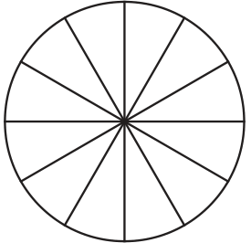
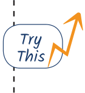
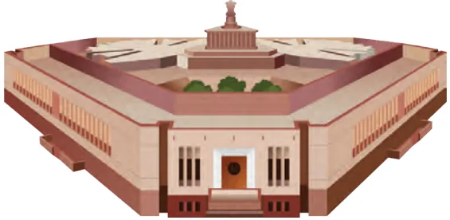
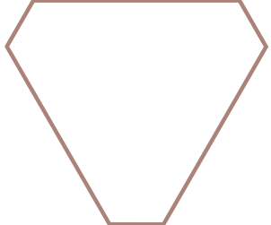
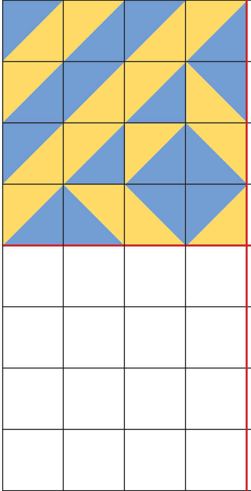

<!DOCTYPE html>
<html lang="en">
<head>
<meta charset="UTF-8">
<meta name="viewport" content="width=device-width,initial-scale=1">
<title>Figure it Out — Symmetry</title>
<meta name="description" content="Class 6 Mathematics · Symmetry · Figure it Out">
<link rel="icon" href="data:image/svg+xml,<svg xmlns='http://www.w3.org/2000/svg' viewBox='0 0 100 100'><text y='.9em' font-size='90'>📘</text></svg>">
<link rel="stylesheet" href="../../../assets/book.css">
<link rel="stylesheet" href="https://cdn.jsdelivr.net/npm/katex@0.16.11/dist/katex.min.css" crossorigin="anonymous">
</head>
<body>
<header class="topbar">
<div class="topbar-in">
  <div class="crumb">
    <span class="c1"><a href="../../../index.html">Library</a> · <a href="../../index.html">Class 6 Mathematics</a></span>
    <span class="c2">Symmetry · Figure it Out</span>
  </div>
  <a class="tb-btn" data-nav="prev" href="../../09-symmetry/10-symmetries-of-a-circle/index.html" title="Symmetries of a circle">←</a>
  <details class="drawer"><summary class="tb-btn" title="Sections in this chapter">☰</summary>
<div class="drawer-panel"><div class="dh">Symmetry</div><a href="../01-chapter-opener/index.html">Chapter opener</a><a href="../02-line-of-symmetry-9.1/index.html">9.1 Line of Symmetry</a><a href="../03-figure-it-out/index.html">Figure it Out</a><a href="../04-figures-with-more-than-one-line-of-symmetry/index.html">Figures with more than one line of symmetry</a><a href="../05-reflection/index.html">Reflection</a><a href="../06-generating-shapes-having-lines-of-symmetry/index.html">Generating shapes having lines of symmetry</a><a href="../07-figure-it-out/index.html">Figure it Out</a><a href="../08-rotational-symmetry-9.2/index.html">9.2 Rotational Symmetry</a><a href="../09-figure-it-out/index.html">Figure it Out</a><a href="../10-symmetries-of-a-circle/index.html">Symmetries of a circle</a><a href="../11-figure-it-out/index.html" aria-current="page">Figure it Out</a><a href="../12-game/index.html">Game</a><a href="../13-summary/index.html">Summary</a><a href="../14-solutions/index.html">CHAPTER 9 — SOLUTIONS</a></div></details>
  <a class="tb-btn" data-nav="next" href="../../09-symmetry/12-game/index.html" title="Game">→</a>
  <button class="tb-btn" data-theme-toggle title="Toggle light / dark" aria-label="Toggle light or dark theme">◐</button>
</div>
<div class="progress"><span style="width:77.8%"></span></div>
</header>
<main class="wrap">
<div class="sec-head">
  <p class="eyebrow"><a href="../index.html">Chapter 9 · Symmetry</a></p>
  <h1>Figure it Out</h1>
  <p class="sec-meta">Textbook pages 22–25 · 8 figures</p>
</div>
<article class="prose">
<ul class="qlist">
<li><span class="mk">1.</span><span class="lt">Colour the sectors of the circle below so that the figure has i)</span></li>
</ul>
<p>3 angles of symmetry, ii) 4 angles of symmetry, iii) what are the possible numbers of angles of symmetry you can obtain by colouring the sectors in different ways?</p>
<figure class="fig"></figure>
<ul class="qlist">
<li><span class="mk">2.</span><span class="lt">Draw two figures other than a circle and a square that have both</span></li>
</ul>
<p>reflection symmetry and rotational symmetry.</p>
<ul class="qlist">
<li><span class="mk">3.</span><span class="lt">Draw, wherever possible, a rough sketch of:</span></li>
<li><span class="mk">a.</span><span class="lt">A triangle with at least two lines of symmetry and at least two</span></li>
</ul>
<p>angles of symmetry.</p>
<ul class="qlist">
<li><span class="mk">b.</span><span class="lt">A triangle with only one line of symmetry but not having</span></li>
</ul>
<p>rotational symmetry.</p>
<ul class="qlist">
<li><span class="mk">c.</span><span class="lt">A quadrilateral with rotational symmetry but no reflection</span></li>
</ul>
<figure class="fig side-fig"></figure>
<p>symmetry.</p>
<ul class="qlist">
<li><span class="mk">d.</span><span class="lt">A quadrilateral with reflection symmetry but not having</span></li>
</ul>
<p>rotational symmetry.</p>
<ul class="qlist">
<li><span class="mk">4.</span><span class="lt">In a figure, \(60 ^{\circ}\) is the smallest angle of symmetry. What are</span></li>
</ul>
<p>the other angles of symmetry of this figure?</p>
<ul class="qlist">
<li><span class="mk">5.</span><span class="lt">In a figure, \(60 ^{\circ}\) is an angle of symmetry. The figure has two angles</span></li>
</ul>
<p>of symmetry less than \(60 ^{\circ}\) . What is its smallest angle of symmetry?</p>
<ul class="qlist">
<li><span class="mk">6.</span><span class="lt">Can we have a figure with rotational symmetry whose smallest</span></li>
</ul>
<p>angle of symmetry is:</p>
<ul class="qlist">
<li><span class="mk">a.</span><span class="lt">\(45 ^{\circ}\) ?</span></li>
<li><span class="mk">b.</span><span class="lt">\(17 ^{\circ}\) ?</span></li>
<li><span class="mk">7.</span><span class="lt">This is a picture of the new Parliament Building in Delhi.</span></li>
</ul>
<figure class="fig"></figure>
<figure class="fig side-fig"></figure>
<ul class="qlist">
<li><span class="mk">a.</span><span class="lt">Does the outer boundary of the picture have reflection</span></li>
</ul>
<p>symmetry? If so, draw the lines of symmetries. How many are they?</p>
<ul class="qlist">
<li><span class="mk">b.</span><span class="lt">Does it have rotational symmetry around its centre? If so, find</span></li>
</ul>
<p>the angles of rotational symmetry.</p>
<ul class="qlist">
<li><span class="mk">8.</span><span class="lt">How many lines of symmetry do the shapes in the first shape</span></li>
</ul>
<p>sequence in Chapter 1, Table 3, the Regular Polygons, have? What number sequence do you get?</p>
<ul class="qlist">
<li><span class="mk">9.</span><span class="lt">How many angles of symmetry do the shapes in the first shape</span></li>
</ul>
<p>sequence in Chapter 1, Table 3, the Regular Polygons, have? What number sequence do you get?</p>
<ul class="qlist">
<li><span class="mk">10.</span><span class="lt">How many lines of symmetry do the shapes in the last shape</span></li>
</ul>
<p>sequence in Chapter 1, Table 3, the Koch Snowflake sequence, have? How many angles of symmetry?</p>
<figure class="fig side-fig"></figure>
<ul class="qlist">
<li><span class="mk">11.</span><span class="lt">How many lines of symmetry and angles of</span></li>
</ul>
<p>symmetry does Ashoka Chakra have?</p>
<h3 id="s-playing-with-tiles">Playing with Tiles</h3>
<ul class="qlist">
<li><span class="mk">a.</span><span class="lt">Use the colour tiles given at the end of the</span></li>
</ul>
<p>book to complete the following figure so that it has exactly 2 lines of symmetry.</p>
<ul class="qlist">
<li><span class="mk">b.</span><span class="lt">Use 16 such tiles to make figures that have exactly:</span></li>
</ul>
<p>1 line of symmetry 2 lines of symmetry</p>
<ul class="qlist">
<li><span class="mk">c.</span><span class="lt">Use these tiles in making creative symmetric designs.</span></li>
</ul>
<figure class="fig table-fig"></figure>
</article>
<nav class="pager"><a class="" data-nav="prev" href="../../09-symmetry/10-symmetries-of-a-circle/index.html"><span class="dir">← Previous</span><span class="t">Symmetries of a circle</span><span class="ch">Symmetry</span></a><a class="nx" data-nav="next" href="../../09-symmetry/12-game/index.html"><span class="dir">Next →</span><span class="t">Game</span><span class="ch">Symmetry</span></a></nav>
</main><footer class="site">Generated from the source textbook PDFs · text, figures and exercises belong to their respective publishers.</footer><script defer src="https://cdn.jsdelivr.net/npm/katex@0.16.11/dist/katex.min.js" crossorigin="anonymous"></script>
<script defer src="https://cdn.jsdelivr.net/npm/katex@0.16.11/dist/contrib/auto-render.min.js" crossorigin="anonymous"
  onload="renderMathInElement(document.body,{delimiters:[
    {left:'\\(',right:'\\)',display:false},
    {left:'$$',right:'$$',display:true},
    {left:'\\[',right:'\\]',display:true}],throwOnError:false,ignoredTags:['script','noscript','style','textarea','pre','code']})"></script>
<script src="../../../assets/book.js"></script>
</body>
</html>
